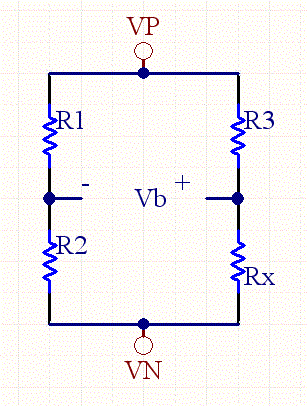

Wheatstone Bridge Calculator
The Wheatstone bridge is a very useful circuit. When the bridge is fully balanced, the right side resistors identical to the left side resistors (R1=R3, and R2=Rx), the voltage across the bridge is zero. However, with a small change in resistance on one of the resistors, and the bridge becomes unbalanced, and a voltage difference appears. Wheatstone bridge are used in all sorts of sensor devices such as strain gauges, pressure gauges, etc.

A differencing amplifier can be used to extract the common mode signal, while rejecting all of the common mode noise. As a result very small signals and changes can be extracted from the bridge, because common mode noise is easily rejected.
Equations:
The bridge voltage is calculated as follows:
VB= Vin*[Rx/(R3+Rx)-R2/(R1+R2)]
If R3=R1, and Rx= R2+delta, then
VB= Vin*[(R2+delta)/(R1+R2+delta)-R2/(R1+R2)]
Now if we assume delta is much smaller than R1+R2, then
VB= ~ Vin*[delta/(R1+R2)]
So we can see that the bridge voltage is approximately proportional to the error delta, divided by the sum of the resistors on one side.
Given the bridge voltage we can compute the value for an unknown resistor.
(R1+R2)*(R3+Rx)*VB/Vin= Rx*(R1+R2)+ R2*(R3+Rx)
Rx*(R1+R2)*VB/Vin + R3* (R1+R2)VB/Vin= Rx*R1+Rx*R2 - R2*R3- Rx*R2
Rx*R1 - Rx*(R1+R2)*VB/Vin= R2*R3 + R3* (R1+R2)VB/Vin
Rx = (R2*R3 + R3* (R1+R2)VB/Vin)/ (R1- (R1+R2)*VB/Vin)